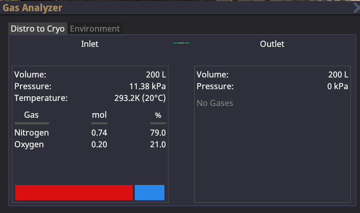
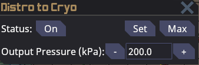
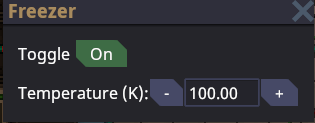
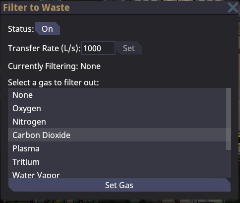
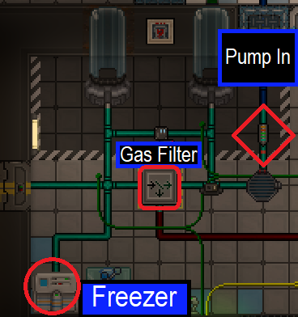
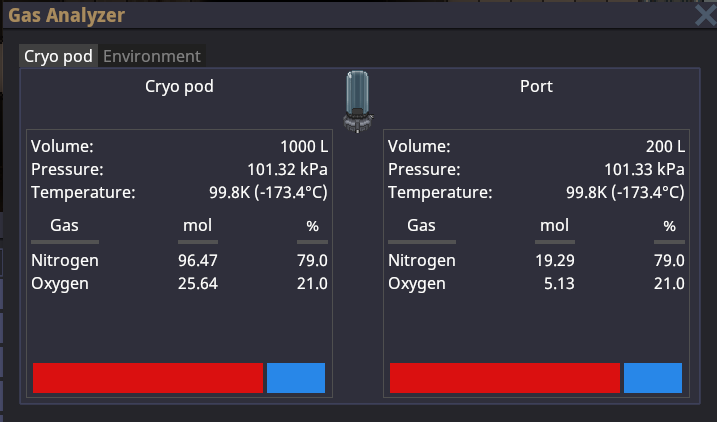

the ss14 beginner cryogenics guide by hoshizora aka Willow Yanagi
CRYOGENICS GUIDE It's easier than you think and very powerful
SETUP EXAMPLE - MARATHON STATION
Step 1: Acquire tools. Get a gas analyzer, t-ray scanner, and anything else you need to sort out your medbay Step 2: Wait for atmos to set up distro (shoudn't take long) Step 3:
Use gas analyzer on gas pump facing into the cryo network and make sure the inlet is turned on and distro is working. Should look like this before you turn on the pump.

Step 4: Turn on gas pump in, set freezer to 100K, and gas filter to filter Carbon Dioxide. The UI on each instrument should look like the following
Gas pump in

Freezer to 100k

Gas filter to filter Carbon Dioxide

Marathon layout:

Step 5: Use gas analyzer on the pods to check if everything is good. Should look like this:

✅ Pressure around 100kPa
✅ Temperature around 100k
✅ 79% nitrogen 21% oxygen split or something close to that
Notes
- If you treat a lot of slime people in cryo, make sure to briefly set the gas filter to Nitrous Oxide in order to get it out of the system.
- The stations Cog and Core have another gas pump that must be turned that comes off the gas filter in order to pump the waste into the waste distro
- Oasis station reroutes cryo waste into an empty canister, unsure if it ever gets full but it's worth it to monitor your cryo pods throughout the shift just to make sure.
USING CRYOGENICS
Prerequisites to cryo: - Cryogenic chemicals (Some cryoxadone starts on every station) - Patient is not bleeding, has at least 80% blood level, and is not dead. Bring them to at least 170-180 damage before defibrillation - Patient is not wearing any outerclothing such as a coat, hardsuit, etc.
jumpsuit can be taken off too optionally if you're a freak like that - Cryogenics works A LOT better on people with multiple damage types rather than a single damage type, so choose your patients wisely
ACTUAL PROCESS OF HEALING:
Step 1: Drag patient into the cryopod
Step 2: Left click pod to see their current health, and wait until their internal temperature approaches 213k (150k for Opporozidone), at which point you can left click the pod while holding a beaker of cryogenic chemical to insert it
Step 3: Wait for their total damage to get out of crit or down to around 30 and take them out so you don't waste too much chems
Step 4: Give them their clothing back, put them in a bed near a space heater and/or medibot to heal the remaining damage. Giving them a scarf or winter jacket also helps warm them up again. Leporazine can be used for lizards in extreme cases to heat them up again.
CRYOGENIC CHEMICALS
Cryoxadone ・The default cryogenic chemical, as well as the easiest to make. Heals all damage types except Genetic very effectively. Patients must be alive
Aloxadone ・A special cryogenic chemical that requires aloe from botany to be made. Heals Heat, Cold, Shock, and Caustic to a lesser rate but does work on dead bodies. ・Helpful for people who have died to overheated atmosphere or left in space, but can require a LOT of medicine to actually recover some victims. ・100u will heal about 800 heat, cold and shock damage, but many burn or spaced victims can often have over 1000 damage due to the way body temperature inflicts damage on dead bodies past death.
Necrosol ・A very powerful cryogenic chemical that heals Brute, Burn, and Poison damage in dead bodies. The only way to save bodies with over 195 poison damage. ・This chemical requires omnizine. Do not expect chemistry to be able to make it at all unless they are cooperating very closely with botany. ・Necrosol does not work with radiation damage, if someone has 195 radiation damage or more, they are permadead. ・If you manage to kill one of those nasty revenants, the ectoplasm they leave behind can be grinded into 25u necrosol.
Opporozidone ・Requires both carpotoxin and herbs from botany to be made, but can bring most rotted bodies back to life. ・Before using or requesting Opporozidone, check the amount of cellular damage the body has. If it is 195 or higher, they are permadead. ・However in the case that they don't have excessive genetic damage, the best way to cure this cellular damage after the rotting has been reversed can be done with the next chemical.
Doxarubixadone ・A cryogenic chemical that heals only cellular damage. Patients must be alive ・Cellular damage is currently rather rare but can show up from time to time, usually when slimes attack. Also starts to build up in very rotted bodies. ・Phalanximine has recently been heavily nerfed, and with this chemical being extremely easy to make, should be used for any genetic damage on anyone. ・When bringing back a very rotted body it may be worth it to cryo them with this chemical first right after they are defibbed.